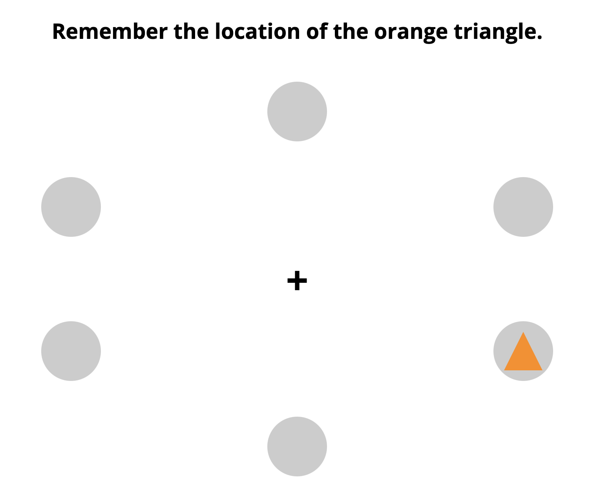
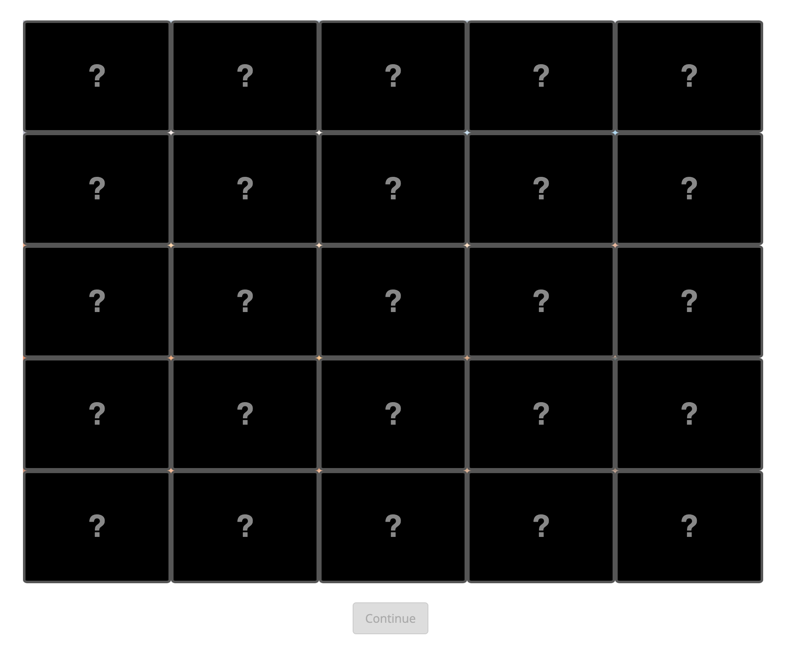
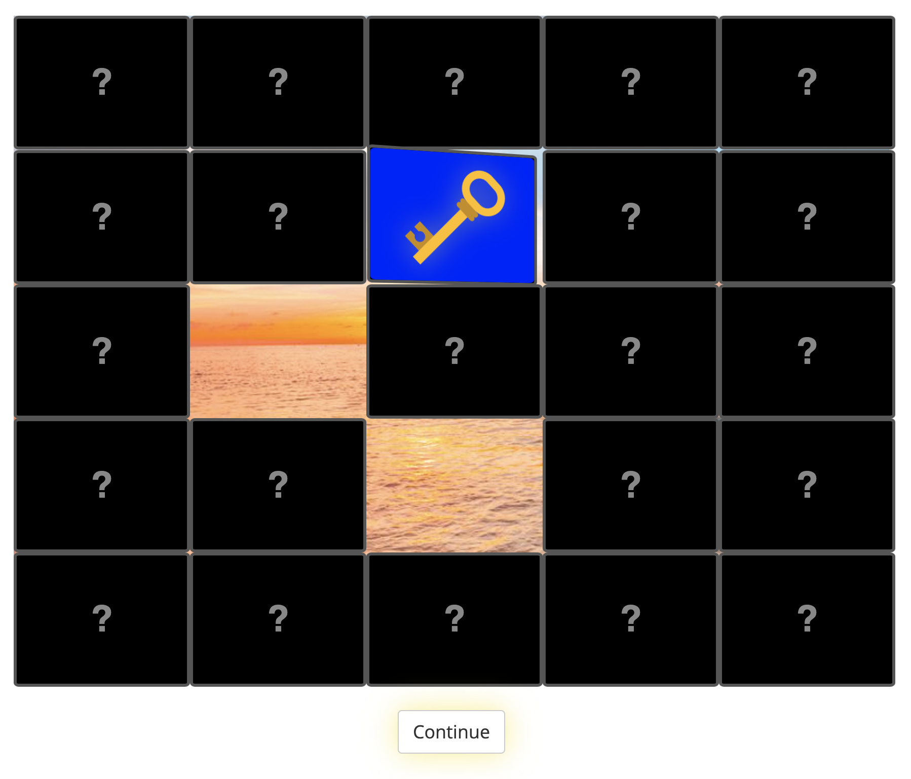
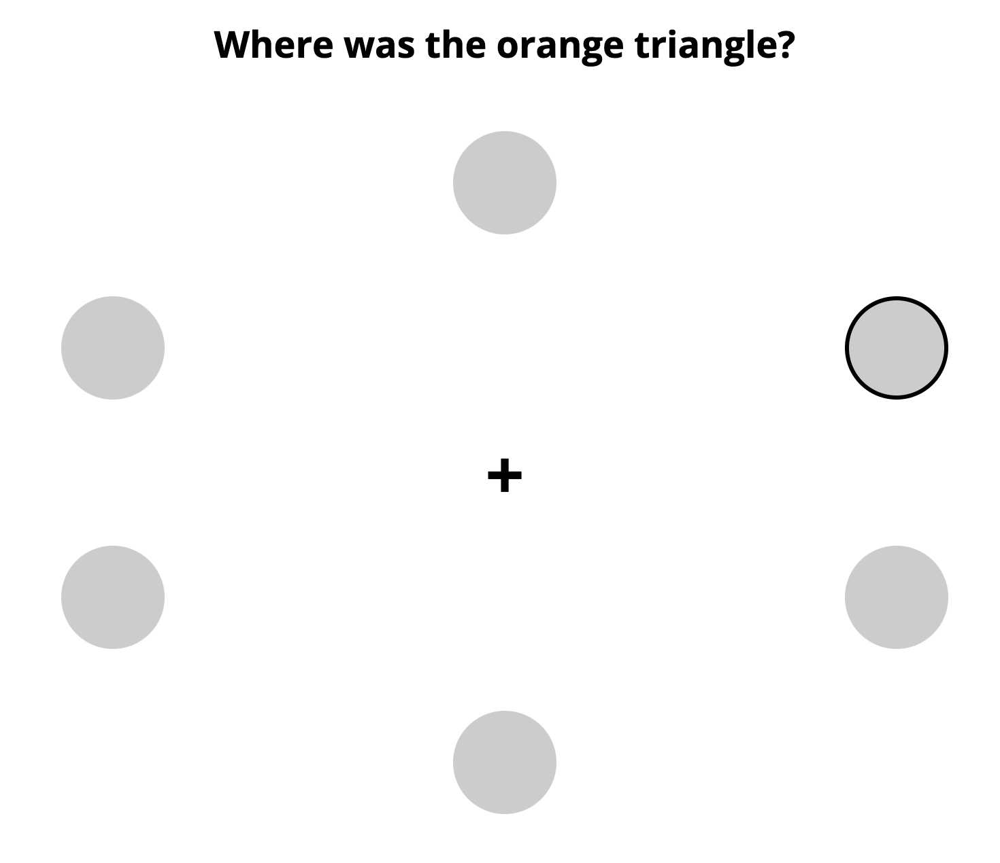

<!DOCTYPE html>
<html>
  <head>
    <title>Experiment</title>
    <script src="https://unpkg.com/jspsych@7.3.1"></script>
    <script src="https://unpkg.com/@jspsych/plugin-html-keyboard-response@1.1.2"></script>
    <script src="https://unpkg.com/@jspsych/plugin-instructions@1.1.2"></script>
    <script src="https://unpkg.com/@jspsych/plugin-preload@1.1.2"></script>
    <script src="https://unpkg.com/@jspsych/plugin-survey@0.2.1"></script>
    <script src="https://unpkg.com/@jspsych/plugin-fullscreen@1.1.2"></script>
    <script src="https://unpkg.com/@jspsych/plugin-html-button-response@1.1.2"></script>
    <script src="https://unpkg.com/@jspsych-contrib/plugin-pipe"></script>
    <script src="curiosityPlugin.js"></script>
    <script src="cognitiveLoadingPlugin.js"></script>
    <link href="https://unpkg.com/jspsych@7.3.1/css/jspsych.css" rel="stylesheet" type="text/css" />
    <link rel="stylesheet" href="https://unpkg.com/@jspsych/plugin-survey@0.2.1/css/survey.css">
  </head>
  <body></body>
  <script>
    /* initialize jsPsych */
    var jsPsych = initJsPsych();

    // capture info from Prolific
    var subject_id = jsPsych.data.getURLVariable('PROLIFIC_PID');
    var study_id = jsPsych.data.getURLVariable('STUDY_ID');
    var session_id = jsPsych.data.getURLVariable('SESSION_ID');
    jsPsych.data.addProperties({
      subject_id: subject_id,
      study_id: study_id,
      session_id: session_id
    });
    if(subject_id==undefined) {subject_id = jsPsych.randomization.randomID(10);}
    const filename = `${subject_id}.csv`;

    var timeline = [];

    var enter_fullscreen = {
      type: jsPsychFullscreen,
      fullscreen_mode: true,
      data: {
        task: 'fullscreen'
      }
    }
    timeline.push(enter_fullscreen);

    var preload = {
      type: jsPsychPreload,
      images: ['curious_images/IMAGE_1.png',
               'curious_images/IMAGE_2.jpeg',
               'curious_images/IMAGE_3.png',
               'curious_images/IMAGE_4.png',
               'curious_images/IMAGE_5.png',
               'curious_images/IMAGE_6.png',
               'img/KEY.png',
               'img/sunset.jpg',
               'img/load.png',
               'img/flip.png',
               'img/recall.png',
               'img/key_found.png',
      ],
      data: {
        task: 'preload'
      }
    };
    timeline.push(preload);

    var stimuli = [
      {image: "IMAGE_1.png", id: 1 },
      {image: "IMAGE_2.jpeg", id: 2 },
      {image: "IMAGE_3.png", id: 3 },
      {image: "IMAGE_4.png", id: 4 },
      {image: "IMAGE_5.png", id: 5 },
      {image: "IMAGE_6.png", id: 6 }
    ];
    stimuli = jsPsych.randomization.repeat(stimuli, 1);
    const load_order = jsPsych.randomization.repeat(['low', 'high'], 1);
    const key_locations = jsPsych.randomization.repeat([5, 5, 6, 6, 7, 7], 1);

    var intro_image_style = `
      max-width: 500px;
      box-shadow: 0 1px 15px #555;
      border-radius: 10px;
      margin-top: 10px;
    `
    var instructions = {
      type: jsPsychInstructions,
      pages: [
        `<div style="max-width: 75vw"><p>Welcome to the study.</p><p>On the next few screens, we will walk you through the instructions with some images.</p>
        <p>Then you’ll have a chance to practice the procedure in one trial.</p></div>`,

        `<div style="max-width: 75vw"><p>First, you will be asked to remember the position of a shape or several shapes arranged as below. There may be a different numbers of shapes in different trials. <u>Please do this by memory; we ask that you do not write anything down to keep track.</u> The shapes will display for <b>5 seconds</b> before automatically continuing.</p>
        <p>See photo below for reference.</p>
        </div>`,

        `<div style="max-width: 75vw"><p>Then, you will be presented with a grid of cards, as seen in the image below. The "continue" button will be deactivated. You need to find the key in order to activate it. By clicking on cards, they will flip over, revealing either the key or a black x.</p>
        <p>See photo below for reference.</p>
        </div>`,

        `<div style="max-width: 75vw"><p>After finding the key, the ‘continue’ button will be activated. You can choose to proceed. You are still able to flip cards over, too, before continuing.</p>
        <p>See photo below for reference.</p>
        </div>`,

        `<div style="max-width: 75vw"><p>Finally, you will be asked to recall the position of one of the shapes from earlier. We'll tell you if you get it right.</p>
        <p>See photo below for reference.</p>
        </div>`,
        `<p>Feel free to click back to review these directions, and, when ready, click 'next' to begin a <em>practice round!</em></p>`,
      ],
      show_clickable_nav: true,
      data: {
        task: 'instructions',
        instruction_type: 'pre_practice'
      }
    };
    timeline.push(instructions);

    var practice_trial = {
      timeline: [
        {
          type: jsPsychCognitiveLoading,
          mode: 'present',
          load: 'high'
        },
        {
          type: jsPsychCuriosity,
          clicks_until_key: 5,
          image_filepath: `img/sunset.jpg`
        },
        {
          type: jsPsychCognitiveLoading,
          mode: 'recall',
          shape_locations: ()=>{
            return jsPsych.data.allData.trials.slice(-2)[0].locations;
          }
        }
      ],
      data: {
        task: 'practice_trial'
      }
    }
    timeline.push(practice_trial);

    var post_practice = {
      type: jsPsychHtmlButtonResponse,
      choices: ['Ready to Begin'],
      stimulus: `
        <p>That concludes the practice round. Now on to the real thing! Remember:</p>
        <ul style='list-style: none'>
        <li><em>Please use your memory, and <b><u>not</u> pen and paper</b> to remember where the shapes are!</em></li>
        <li><em>Once you find the key, the continue button will be unlocked, and it will stay unlocked! <u>You can continue immediately or flip more cards.</u></li>
        <li><em>You only have <b>five seconds</b> to remember the locations of the shapes, so pay attention :)</em></li>
        </ul>
      `,
      data: {
        task: 'instructions',
        instruction_type: 'post_practice'
      }
    }
    timeline.push(post_practice);

    var mid_trial_transition = {
      type: jsPsychHtmlKeyboardResponse,
      stimulus: "Congratulations! You are halfway done. Starting next trial, the amount of the shapes you are asked to remember will be changed. Press any key when you're ready to continue.",
      data: {
        task: 'transition'
      }
    }

    var gap = {
      type: jsPsychHtmlKeyboardResponse,
      stimulus: `Press any key to continue to the next trial.`,
      data: {
        task: 'transition'
      }
    }

    for(var i = 0; i<6; i++){
      if(i==3){
        timeline.push(mid_trial_transition);
      } else if(i!=0) {
        timeline.push(gap);
      }

      var load = {
        type: jsPsychCognitiveLoading,
        mode: 'present',
        load: load_order[i<3 ? 0 : 1],
        data: {
          task: 'experiment_trial',
          component: 'load',
          round: i+1,
          block_round: (i+1)%3==0 ? 3 : (i+1)%3
        }
      }
      timeline.push(load);

      var curious = {
        type: jsPsychCuriosity,
        clicks_until_key: key_locations[i],
        image_filepath: `curious_images/${stimuli[i].image}`,
        data: {
          task: 'experiment_trial',
          component: 'curiosity',
          round: i+1,
          block_round: (i+1)%3==0 ? 3 : (i+1)%3
        }
      }
      timeline.push(curious);

      var unload = {
        type: jsPsychCognitiveLoading,
        mode: 'recall',
        shape_locations: ()=>{
          return jsPsych.data.allData.trials.slice(-2)[0].locations;
        },
        data: {
          task: 'experiment_trial',
          component: 'unload',
          round: i+1,
          block_round: (i+1)%3==0 ? 3 : (i+1)%3
        }
      }
      timeline.push(unload);
    }

    var survey = {
      type: jsPsychSurvey,
      pages: [
        [
          {
            type: 'html',
            prompt: '<p>Congratulations! You have finished the experimental trials!</p><p>Here are a few additional questions.</p>',
          },
          {
            type: 'text',
            prompt: "Tell us in a few words, in what situations during this experiment were you most curious?",
            name: 'curious_free_response',
            textbox_rows: 2,
            required: true
          },
          {
            type: 'likert',
            prompt: "Rate your level of curiosity towards the pictures under the cards on a scale of 1-5: 1 suggests ‘not curious at all’ and 5 suggests ‘absolutely curious’.",
            name: 'curiosity_level',
            required: true,
            likert_scale_values: [
              {value: 1, text: "1"},
              {value: 2, text: "2"},
              {value: 3, text: "3"},
              {value: 4, text: "4"},
              {value: 5, text: "5"}
            ]
          },
          {
            type: 'multi-choice',
            prompt: "Did you use pen and paper, or any other memory aid, to help you complete this study? Your answer is anonymous and your pay will not be affected, but it's useful for us to know.",
            name: 'pen_and_paper',
            required: true,
            options: ['Yes, I used pen and paper', 'Yes, I used some other memory aid', 'No, I answered using only my memory.'],
            correct_response: 'No, I answered using only my memory.'
          }
        ]
      ],
      data: {
        task: 'survey'
      }
    };
    timeline.push(survey);

    var exit_fullscreen = {
      type: jsPsychFullscreen,
      fullscreen_mode: false,
      delay_after: 0,
      data: {
        task: 'exit_fullscreen'
      }
    }
    timeline.push(exit_fullscreen);

    const save_data = {
      type: jsPsychPipe,
      action: "save",
      experiment_id: "S1c6boVRyz9u",
      filename: filename,
      data_string: ()=>jsPsych.data.get().csv()
    };

    var reveal = {
      type: jsPsychHtmlButtonResponse,
      stimulus: `<div style='max-width: 60vw'><p>Congratulations, the experiment is over! <u>Read on to learn about the experiment, or <b>click the button to return to Prolific</b></u>. Your honest responses will be of immense value for our scientific investigation.<br><br>
        In this study, we are examining the effects of cognitive load on information-seeking behavior. Information-seeking has widely been used as an indicator of curiosity. When someone experiences high cognitive load, they are dividing up cognitive processing resources between two or more different tasks. In our study, participants face a strain on their visual-spatial processing as they attempt to remember the location of several shapes while also seeking out a yellow key in a card-flipping game. Unbeknownst to the participant, underneath the cards there is a piloted-tested novel image. By flipping cards in search of the yellow key, the participant will gradually reveal this underlying image. We consider the number of cards a participant flips after already finding the key to reflect the participant’s curiosity. We suspect that participants who were asked to memorize the locations of more shapes (thus having higher cognitive load) will be less curious to investigate what the concealed images contain. <br><br>
        Please note that all responses will be kept confidential and used only for research purposes.Thank you for your time and effort.</p></div>
      `,
      choices: ['Return to Prolific'],
      data: {
        task: 'reveal'
      },
      on_finish: function(){
        window.location = "https://app.prolific.co/submissions/complete?cc=XXXXXXX" // REPLACE WITH PROLIFIC REDIRECT LINK
      }
    }
    timeline.push(reveal);

    jsPsych.run(timeline);
  </script>
</html>

